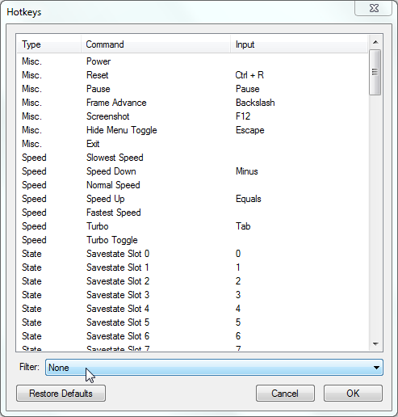

Содержание
Для настройки горячих клавиш в эмуляторе выбери Config -> Map Hotkeys.

Переключай опции вкладки Filter, ознакомься с рекомендуемыми горячими клавишами, протестируй их работу, и при необходимости перенастрой их.
Чтобы использовать комбинацию клавиш вместе со служебными клавишами (Shift, Alt, Ctrl и другие), необходимо удерживать служебную клавишу, а затем нажать обычную.
Для восстановления настроек по умолчанию нажми кнопку restore Defaults.
От скорости работы эмулятора зависит не только скорость эмуляции, но еще и скорость исчезновения сообщений на экране.
Некоторые опции доступны в эмуляторе во вкладке NES -> Emulation Speed.
Каждое последующее нажатие замедляет игру в 2 раза.
Каждое последующее нажатие ускоряет игру. Основное назначение кнопки - вернуться к нормальной скорости после использования Speed Down.
Теоретически можно ускорить эмулятор максимум в 64 раза, но на практике это не получается. Возможно у меня слишком медленный ноутбук.
При удержании кнопки эмулятор будет работать с максимально возможной скоростью (быстрее, чем через Speed Up).
Максимальная скорость зависит от производительности твоего компьютера, а также от нагруженности эмулятора при использовании дополнительных окон, например Debugger'а или Hex Editor'а.
Некоторые опции доступны в эмуляторе во вкладке File -> Savestate.
Выбрать слот для сохранения игрового процесса. Если на слоте еще нету сохранения, он будет прозрачным, а если есть, то будет выделен серым цветом.
Последний выбранный номер слота сохраняется после закрытия эмулятора.
Сохранить на выбранный слот.
Файлы сохранений хранятся в папке fcs с расширением файла от .fc0 до .fc9, в зависимости от записанного слота.
Можно поменять цифру в расширении файла, изменив номер слота, с которого он будет загружаться.
Загрузить сохранение с выбранного слота.
Если слот пустой/отсутствует файл сохранения, эмулятор выдаст на экране сообщение об ошибке.
Некоторые опции доступны в эмуляторе во вкладке NES.
Другое название - Hard Reset. Эмулирует передергивание питания на оригинальной приставке. Функция практически аналогична новому открытию ROM'а. Все игровые данные будут сброшены.
Другое название - Soft Reset. Эмулирует нажатие кнопки Reset на оригинальной приставке. В зависимости от игры, некоторые данные могут быть сохранены, например Hi-Score.
Временная приостановка эмуляции игры. В эмуляторе на экране отображается значок паузы.
Этой же кнопкой можно снять паузу с эмулятора.
Если эмулятор не стоит на паузе, то выставляется пауза при нажатии.
Если эмулятор стоит на паузе, то разовое нажатие кнопки проматывает эмуляцию игры на 1 кадр вперед.
Если удерживать кнопку, эмуляция запустится в обычном режиме. При отпускании кнопку эмулятор снова станет на паузу.
Пауза снимается кнопкой Pause.
Кнопка позволяет отменить сохранение, если ты его ошибочно перезапишешь. Этой же кнопкой можно отменить отмену сохранения.
При каждом сохранении в папке fcs создается бэкап-файл, состоящий из предыдущего сохранения этого слота, но горячая клавиша работает только для самого последнего сохранения, которое ты делал.
Если требуется восстановить другое сохранение, надо делать это вручную, удалив оригинальный файл и переименовав бэкап в папке fcs.
После настроек горячих клавиш загляни сюда, чтобы убедиться что нету конфликтов клавиш с другими командами, поменяй если нужно.